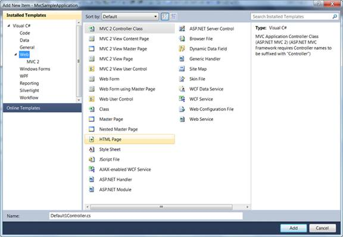
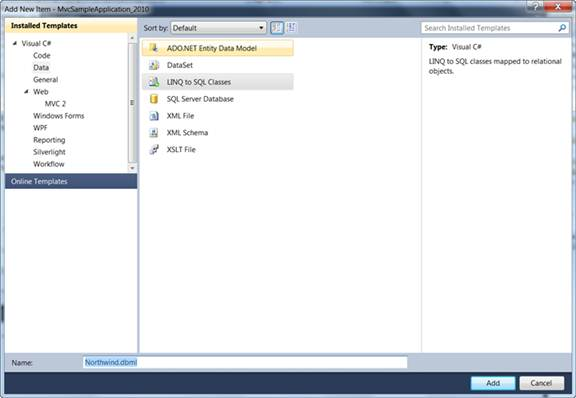
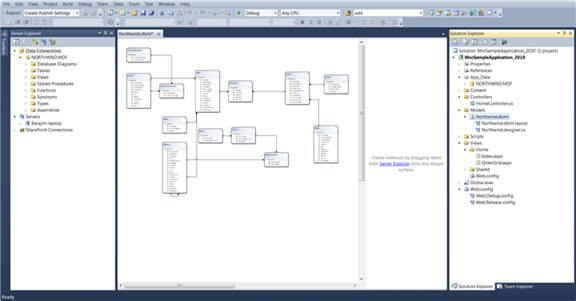

After an MVC application is created, a model has to be added. The model is a place from where the data can be fetched by the controller (Refer to Understanding ASP.NET MVC). This section guides you through a step-by-step procedure for adding a model.
1. In the Solution Explorer, right-click the Models folder.
 Note: A context menu will be displayed.
Note: A context menu will be displayed.

Figure 36: Context Menu Displayed on Clicking the Models Folder
2. On the context menu, point to Add and click New Item.
Note: The Add New Item {Application Name} is
displayed. The Categories window displays the components available under Visual
C# program. Templates window displays the templates under the selected
elements.

Figure 37: Add New Item Dialog Box
3. Click Data under Visual C#.
Note: The Visual Studio installed templates are
displayed in the Templates window.

Figure 38: Connecting a Database to the Application
 Note: This step is optional and should be
performed only when you want to attach a database with the model. For details,
see
http://weblogs.asp.net/scottgu/archive/2007/05/29/linq-to-sql-part-2-defining-our-data-model-classes.aspx.
Note: This step is optional and should be
performed only when you want to attach a database with the model. For details,
see
http://weblogs.asp.net/scottgu/archive/2007/05/29/linq-to-sql-part-2-defining-our-data-model-classes.aspx.
4. In the Name box, type Northwind.
5. Click LINQ to SQL Classes under Templates.
6. Click Add.
Note: The data classes are added under the Model
folder.
7. In the Name box, enter Northwind.dbml and click the Add button.
8. Now Northwind LINQ to SQL classes are created in your application and the Object Relational Designer appears.
9. Drag and drop the tables from the Server Explorer window onto the Object Relational Designer to create LINQ to SQL classes that represent particular database tables. You need to add all Northwind database tables onto the Object Relational Designer.
When you're done you will find the following screen.

Figure 39: Northwind.dbml